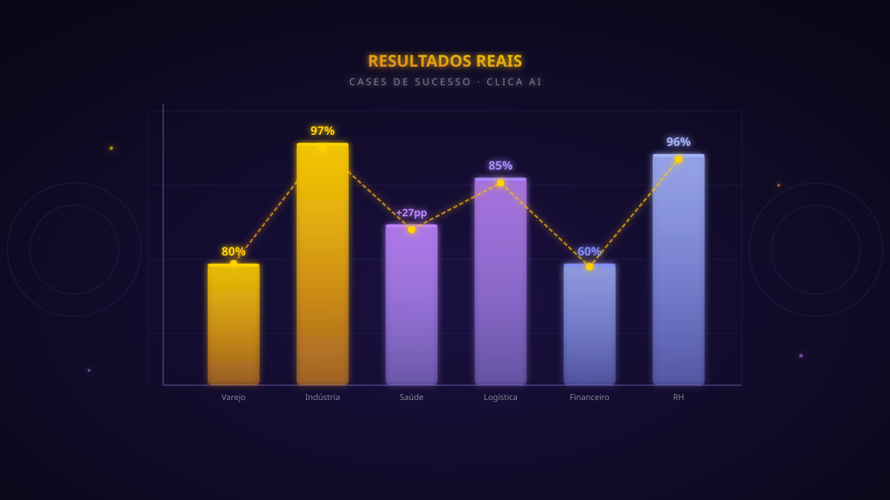
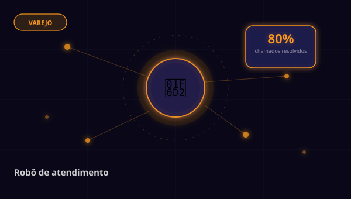
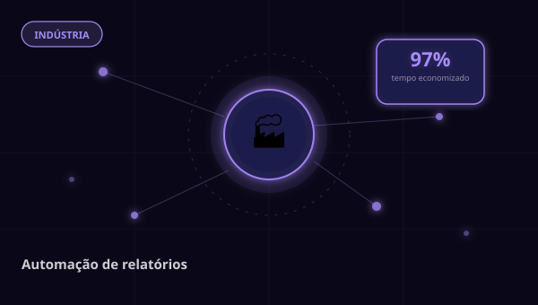
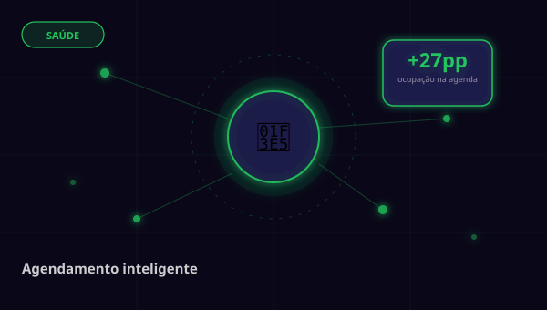
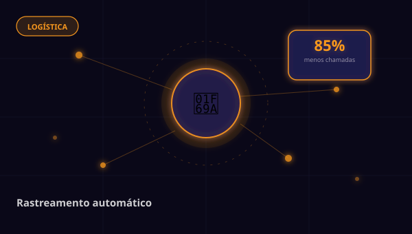
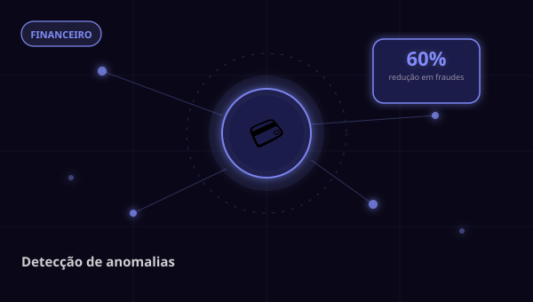
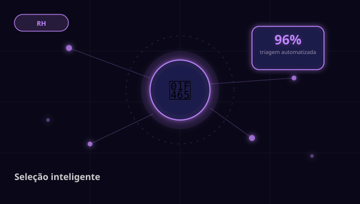

Veja como transformamos negócios com inteligência artificial — em números reais, não em promessas.

Rede varejista com 12 lojas implementou agente de IA para triagem e resolução de chamados de suporte. O agente resolve 80% dos chamados sem intervenção humana, com tempo médio de resposta de 4 segundos.

Indústria de médio porte gastava 3 horas diárias compilando relatórios de produção manualmente. Automatizamos o processo completo — coleta, consolidação e envio — em tempo real.

Clínica médica com 8 especialidades adotou agente de IA para agendamento, confirmação e reagendamento de consultas. Taxa de ocupação da agenda subiu de 65% para 92%.

Empresa de logística recebia centenas de ligações diárias pedindo status de entregas. Implementamos automação de rastreamento com notificações proativas via WhatsApp.

Fintech desenvolveu modelo de detecção de fraudes com IA customizada. O sistema analisa 100% das transações em milissegundos, reduzindo fraudes sem aumentar falsos positivos.

Empresa com alto volume de contratações automatizou a triagem de currículos com IA. O processo que levava 5 dias agora é concluído em 2 horas, com análise mais precisa e imparcial.
Fale com um especialista e descubra qual solução de IA faz mais sentido para o seu negócio.